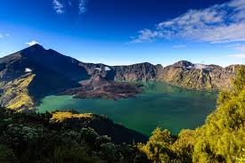
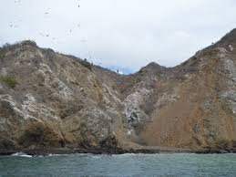

28 de mayo de 2018 - 56 comentarios
Las Islas Galápagos son mundialmente reconocidas como el mejor destino para hacer ecoturismo, en particular por sus paraísos para buzos.
Una gran diversidad de fauna se puede encontrar en este archipiélago declarado como patrimonio de la humniadad por la UNESCO en el año 1978.
Dentro de las maravillas que alberga este majestuoso lugar se pueden encontrar concentraciones infinitas de tiburón martillo, ballena y toro. Así mismo, los cardúmenes de peces son inagotables una vez los buzos se sumergen bajo el agua.
28 de mayo de 2018 - 56 comentarios
A una hora de Puerto López, Ecuador, la Isla de la Plata se ha convertido en un destino obligatorio para cualquier amante del buceo. Con una enorme variedad de fauna, todos los buzos podrán disfrutar de una increíble experiencia en uno de los ambientes con mayor diverisidad marina del oceano pacífico.
Como dato interesante se puede destacar que la Isla de la Plata alberga la mayor comunidad de mantarrayas hasta la fecha encontrada por los científico, y por tanto, se trata de un lugar en donde día a día se conducen muchos estudios sobre el comportamiento de las mantarrayas.
Buzo profesional certificado por PADI con más de 10 años de experiencia. Cuenta con una certificación como dive master expedida por el centro de buceo más reconocido de Sudamerica.
Su especialidad es el buceo de profundidad y de naufragios.
Su pasión es la fauna bajo el agua, en especial las mantarrayas. Ha tenido la oportunidad de participar de varios estudios sobre estos animales, como parte de una red de apoyo que se dedica al cuidado, protección y estudio del comportamiento de las mantarrayas en el oceano pacífico.